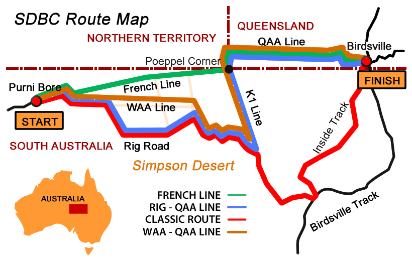
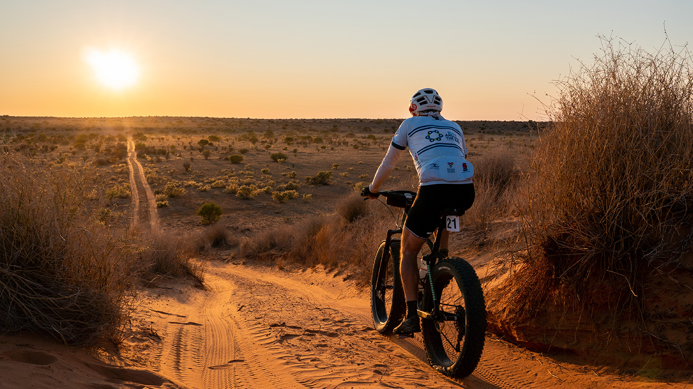

The Route
The Simpson Desert Bike Challenge is held in late September annually. It crosses the Simpson Desert from West to East starting at Purni Bore (Sth Aust) and finishing at Birdsville (Qld).
The course can vary from year to year as several routes have been surveyed and developed.

The Rider
The race is a rigorous event and requires a reasonable amount of fitness and endurance. Although, it is not an elite race and riders of all ages and abilities can participate. Careful preparation is required in getting yourself to the start:-
• Training
• Gear preparation
• Support Crew and 4wd vehicle.

The Event
Race Distance: 485 – 570km
Race Duration: 5 days (9 or 10 stages)
Stage Distances: ~ 75k morning, ~45k afternoon
On Day Five there are one or two stages with the race ending outside the Birdsville Pub in Queensland.
The Race in Action
The event has a minimum speed requirement (total elapsed time). Riders must maintain an average of 12 kph to stay ahead of the pursuing sweep vehicle. If caught by the Sweep, riders are transported by vehicle to the end of that stage. Riders will be credited with the distance they have covered and can then restart the next stage as normal.
Water Stops are located approximately every 20km and it is mandatory to stop and collect water at every Water Stop. (Your crew will supply your filled water bottles to the water stop crews before each stage)
Riders must be self sufficient during each stage as no support vehicles are permitted on the track while the race is in progress.
Support vehicles must travel in either the front convoy ahead of the riders or in the rear convoy behind the Sweep vehicle.
Convoys are very supportive and will assist any vehicles experiencing difficulties crossing dunes etc. Designated convoy leaders have extensive 4wd experience in the desert.
Race regulations require each vehicle to have a UHF radio and a high visibility safety flag.
All communications during the race will be on channel UHF 10. This is the frequency used throughout the Simpson Desert. It is essential to able to communicate with other vehicles in the convoy at all times.
Medical teams patrol the course throughout the race to monitor the physical and mental status of the riders.